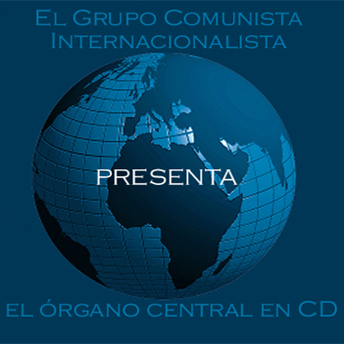
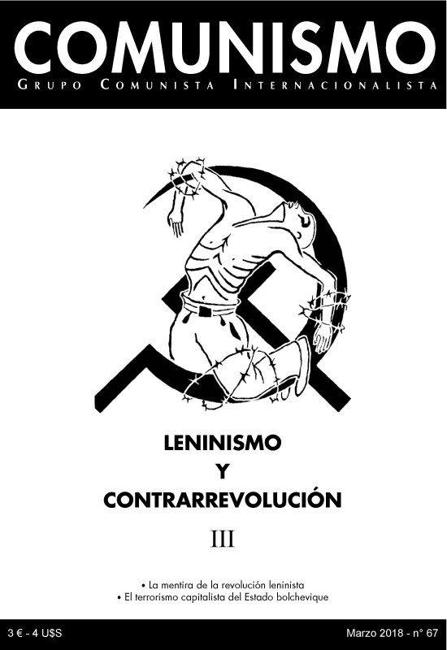
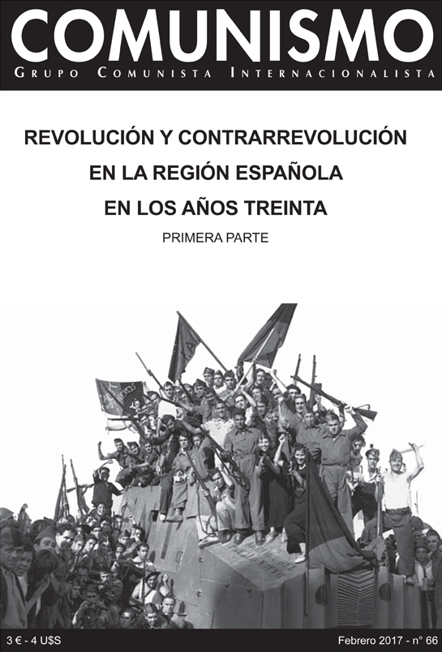
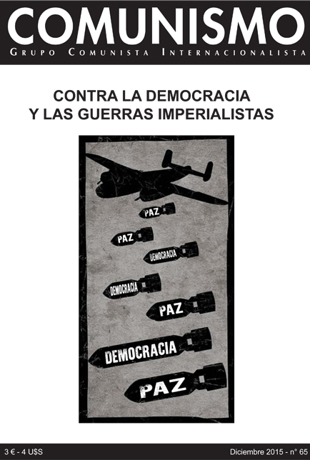
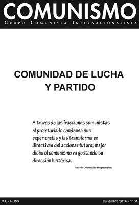
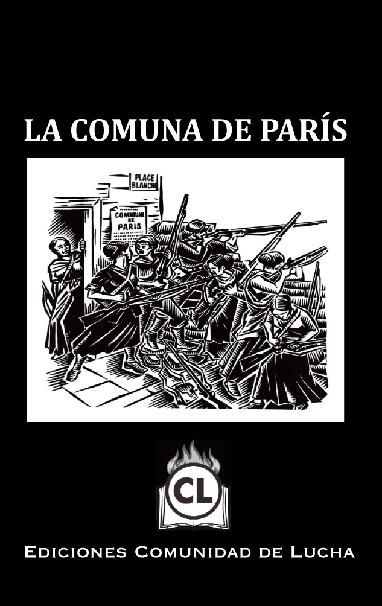
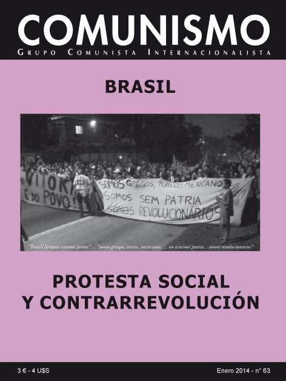
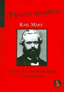
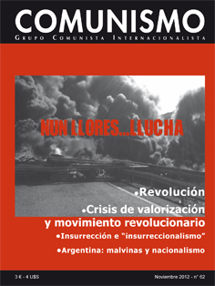
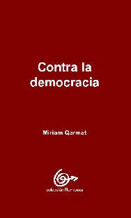

G.C.I.
¡Attención! Nueva dirección! (sin otra mención) :
BP33 - Anderlecht Autonomie - 6a, rue de l'Autonomie - 1070 Bruxelles - Bélgica
Inglés
Francés
Castellano
Árabe
Checo
Alemán
Griego
Húngaro
Kurdo
Portugués
Ruso
Turco
Chino
Italiano
Serbo-croata
Sueco
Lea tambien:

Contacto:
info [at] gci-icg [dot] org
|
Comunismo n°67 (Marzo 2017) | PDF |
LENINISMO Y CONTRARREVOLUCIÓN - LA MENTIRA DE LA REVOLUCIÓN LENINISTA (Tercera parte)
Comunismo n°66 (Febrero 2017) | PDF |
REVOLUCIÓN Y CONTRARREVOLUCIÓN EN LA REGIÓN ESPAÑOLA - AÑOS TREINTA (primera parte)
TESIS acerca de la revolución y la contrarrevolución en la región española durante los años treinta (1997)
| PDF |
Comunismo n°65 (Diciembre 2015) | PDF |
CONTRA LA DEMOCRACIA Y LAS GUERRAS IMPERIALISTAS
Lea
Organo central en castellano del Grupo Comunista
Internacionalista (GCI)
¿Quiénes somos?
El Grupo Comunista Internacionalista lucha
por la constitución del proletariado internacional en clase y por
lo tanto en partido mundial para la destrucción del capitalismo,
es decir de esta sociedad sometida a la dictadura de la ganancia que hambrea
al hombre y destruye la naturaleza. Ello implica la destrucción
del trabajo asalariado, de la mercancía, de las clases sociales,
de los ejércitos, de las cárceles, de las fronteras nacionales,
en fin de todo tipo de Estado... Nuestro objetivo es, como el de todos
los revolucionarios del pasado, la constitución de una comunidad
humana mundial sin explotados, ni explotadores.
Al lector
Compañeros, una revista como esta
solo podrá cumplir las tareas teórico - organizativas que
la hora exige, con una participación cada vez más activa
de sus lectores, simpatizantes, corresponsales. Toda contribución,
sea para mejorar el contenido y la forma de la misma (enviando informaciones,
publicaciones de grupos obreros, análisis de situaciones, etc),
sea para mejorar su difusión (haciendo circular cada número
en el mayor número de lectores posibles, consiguiendo nuevos abonados,
sugiriendo otras formas o lugares de distribución, etc.), constituye
una acción en la construcción de una verdadera herramienta
internacional de la lucha revolucionaria.
¡Utilizad estos materiales! Nadie
es proprietario de ellos, son por el contrario parte integrante de la experiencia
acumulada de una clase que vive, que lucha para suprimir su propria condición
de asalariada, y así todas las clases sociales y toda explotación.
¡Reproducid estos textos, discutidlos!
Recibid con nuestro más caluroso
saludo comunista, nuestro llamado al apoyo incondicional a todos los proletarios
que luchan para afirmar los intereses autónomos de clase, contra
la bestia capitalista, contra su Estado y contra los partidos y sindicatos
pseudoobreros que perpetúan su supervivencia y nuestro grito que
te impulsa a forjar juntos el Partido Comunista Mundial, que nuestra clase
necesita para triunfar para siempre.
Para contactarnos, escribir (sin otra
mención) a:
BP 33 - Anderlecht Autonomie - 6a, rue de l'Autonomie - 1170 Bruxelles
- Bélgica>
Email: info [at] gci-icg [dot] org
Nuestras últimas publicaciones

COMUNISMO N°67
(Marzo 2018)
Órgano central en castellano del GCI
| PDF
|

COMUNISMO N°66
(Febrero 2017)
Órgano central en castellano del GCI
| PDF
|

COMUNISMO N°65
(Diciembre 2015)
Órgano central en
castellano del GCI
| PDF
|

COMUNISMO N°64
(Diciembre 2014)
Órgano central en
castellano del GCI
| PDF
|

La Comuna de París
Proletarios Internacionalistas
(Noviembre 2014)
| PDF | PDF Tapa |

COMUNISMO N°63
(Enero 2014)
Órgano central en
castellano del GCI
| PDF
|

(Setiembre 2013)
| PDF tapa | PDF lib. |

COMUNISMO N°62
(Noviembre 2012)
Organo central en castellano
del GCI
| PDF |
Lea tambien:
Tesis
de Orientación Programática
Correspondencias & críticos
Libros

Materiales de Acción
Directa
|
|
{kind=link}